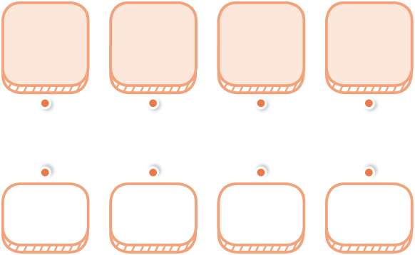

- 1
- 2
- 3
- 4
- 5
- 6
- 7
- 8
- 9
- 10
- 11
- 12
- 13
-
1
똑같이 나누어진 도형에 표 하세요.
-
2
의 사각형을 똑같이 4로 나눈 것 중의 1에 표 하세요.
-
3
색칠한 부분은 전체의 얼마인지 분수로 나타내 보세요.
-
4
주어진 도형에 만큼 색칠해 보세요.
-
5
부분을 보고 전체가 될 수 있는 도형을 찾아 표 하세요.
-
2
분수의 크기를 비교하여 안에  ,
,  ,
,  를 알맞게 써넣으세요.
를 알맞게 써넣으세요.
-
7
하늘이와 우주가 피자를 나누어 먹었습니다. 하늘이는 전체의 을 먹었고, 우주는 전체의 를 먹었습니다. 누가 피자를 더 많이 먹었는지 이름을 써 보세요.
-
8
관계있는 것끼리 선으로 이어 보세요.

점을 드래그하여 옳은 답과 연결하세요.
-
9
색칠한 부분을 분수와 소수로 나타내 보세요.
-
10
나타내는 수가 다른 하나를 찾아 소수로 나타내 보세요.
이 점 오
3과 0.7만큼
0.1이 25개인 수
-
11
소수의 크기를 비교하여 큰 수부터 차례대로 기호를 써 보세요.
-
12
안에 들어갈 수 있는 수 중에서 가장 작은 수에 표 하세요.
3.4
3.
-
13
은하의 연필의 길이는 8.1 cm, 샛별이의 연필의 길이는 79 mm입니다. 누구의 연필이 더 긴지 이름을 써 보세요.